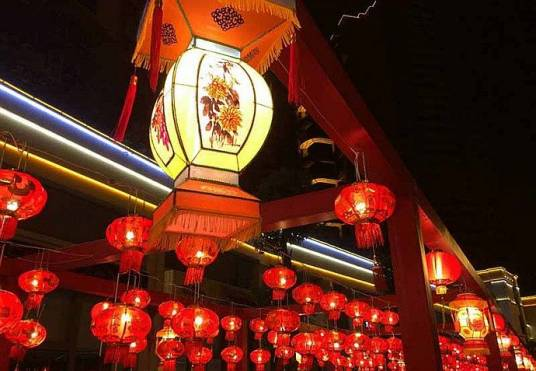
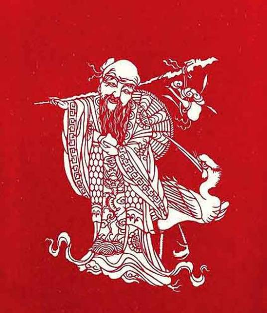
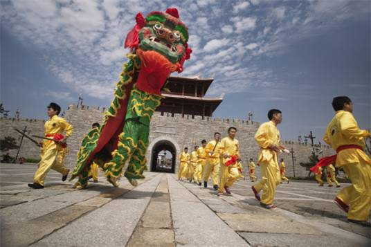
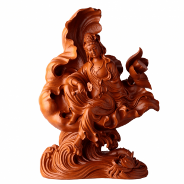
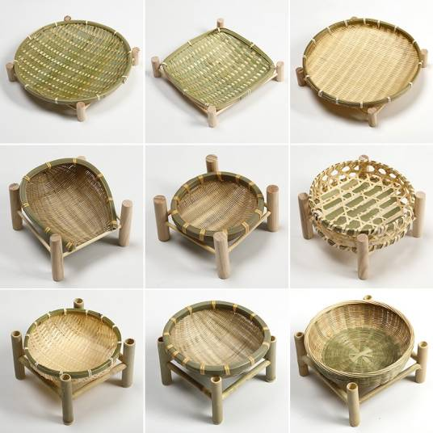
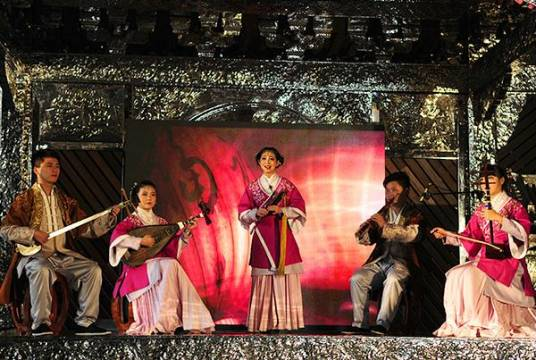

|

泉州花灯泉州花灯起于唐代，盛于宋元，主要分布在泉州市鲤城区、丰泽区，延及周边的晋江市、惠安县、南安县和永春县。泉州花灯历史悠久，具有鲜明的地方特色，是南方花灯的代表。泉州花灯以其独有的刻纸、针刺工艺和料丝镶装技艺闻名于世。 |

剪纸泉州刻纸始于唐而盛于宋，每逢春节、元宵节和其他喜庆之日，泉州民间家家户户都会剪红刻翠，张灯结彩挂桃符，在窗户和门楣上贴团花、粘红笺，显出一种古雅富丽的喜气。 |
|---|
|

泉州刣狮泉州“刣（zhōng）狮”又叫“舞狮”“弄狮”，相传为少林和尚“一元祖师”创建，是闽南地区一项集武术与民间舞蹈为一体的活动。在闽南，每逢大型传统节庆活动总少不了“刣狮”助阵。 |
|

木雕木雕，是泉州民间工艺品种的重头戏。平雕、线雕、根雕、花格雕、神像雕等意彩纷呈，独具一格。泉州的木雕艺术精雕细刻，花团锦簇，是恰如其分。 |
|

竹藤编安溪竹藤编技艺历史悠久，可以追溯上千年。它与安溪乌龙茶的发展息息相关，有安溪乌龙茶就有竹藤编，采茶的茶卡、凉茶的平筛、摇青的茶筛和摇青机、烘茶的焙笼等，千百年来也是竹藤编的。 |
|

南音南音也称“弦管”“泉州南音”，福建省闽南地区的传统音乐，联合国教科文组织人类非物质文化遗产代表作之一。南音有“中国音乐史上的活化石”之称，是中国历史悠久的汉族音乐。 |
古城泉州 半城烟火半城仙
welcome to QuanZhou|泉州欢迎您！